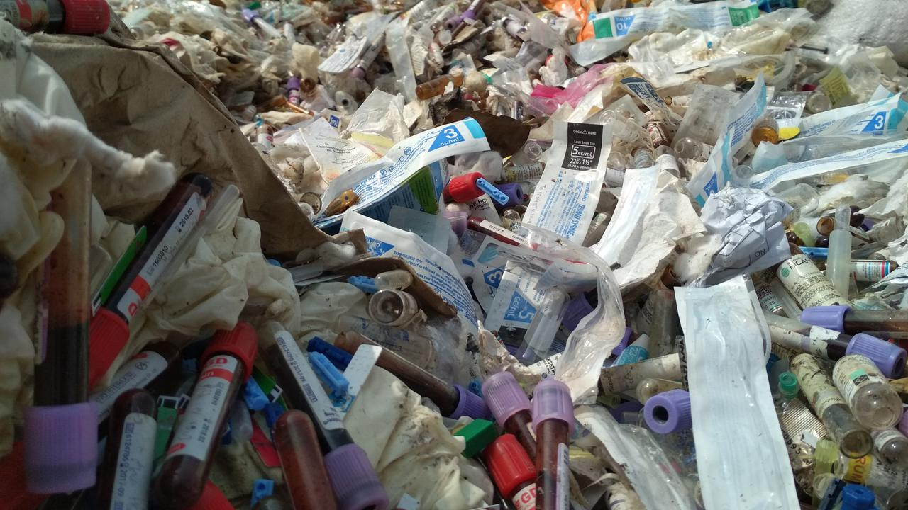
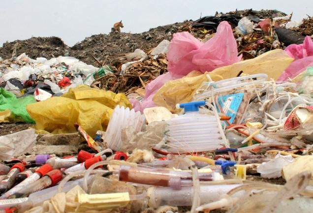
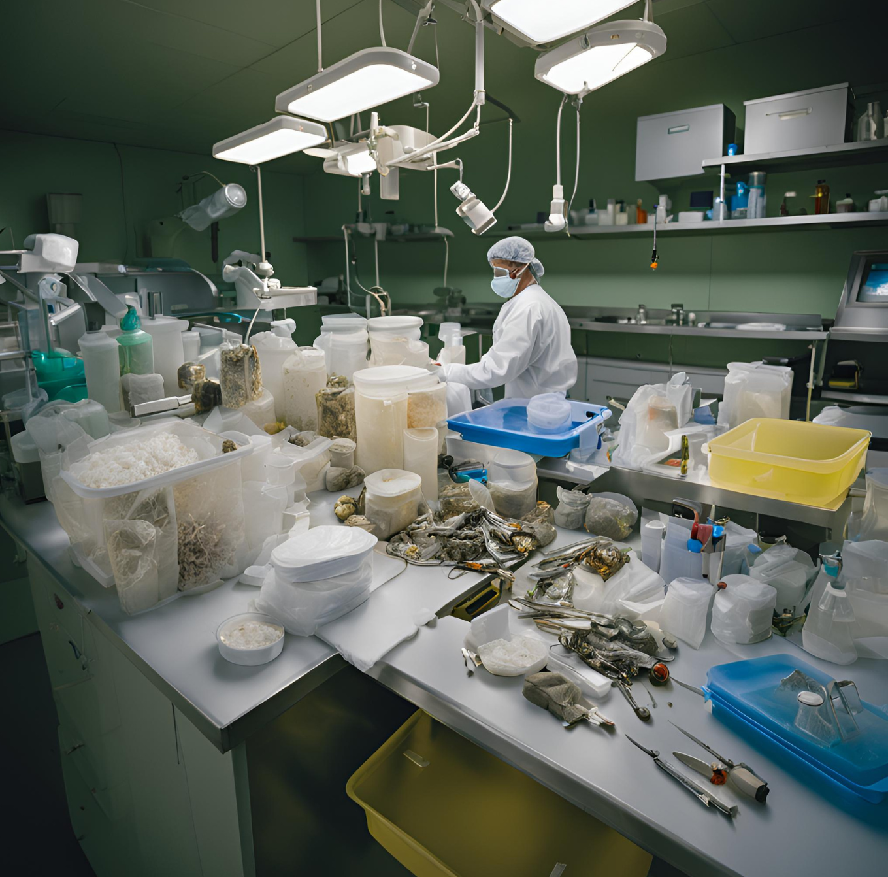
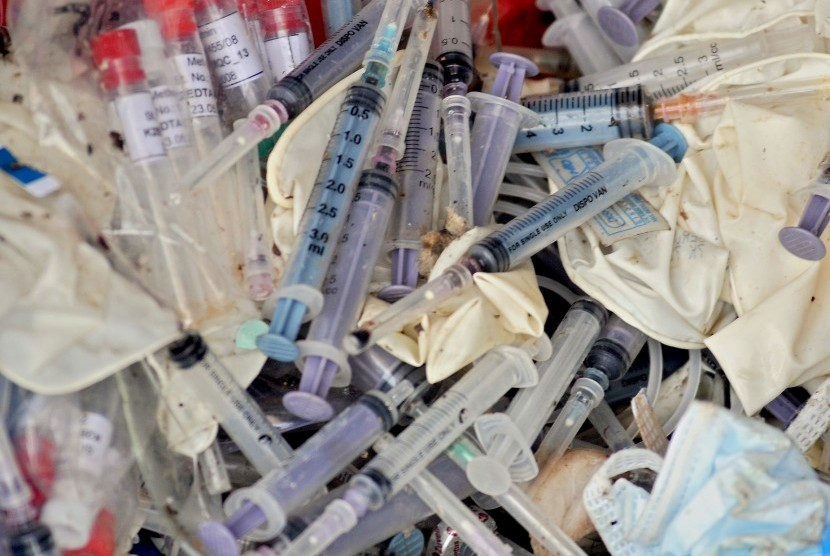
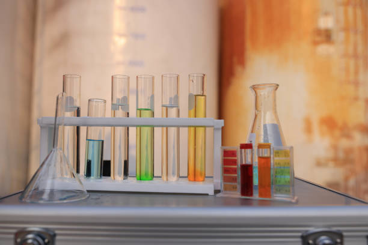
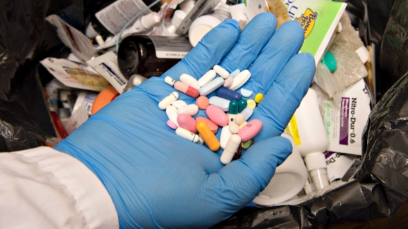
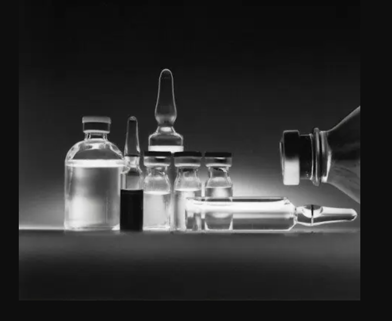
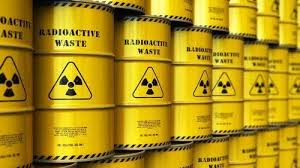
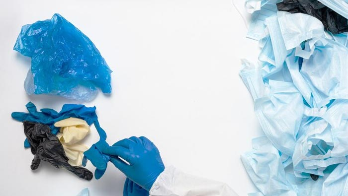

Menurut Permenkes No 18 Tahun 2020, Limbah Medis adalah hasil buangan dari aktifitas medis pelayanan kesehatan.
Dan fasilitas pelayanan kesehatan yang dimaksud adalah suatu alat dan/atau tempat yang digunakan untuk menyelenggarakan upaya pelayanan kesehatan, baik promotif, preventif, kuratif maupun rehabilitatif yang dilakukan oleh pemerintah pusat, pemerintah daerah, dan/atau masyarakat.
Memiliki bahaya utama yaitu risiko infeksi dari mikroorganisme yang terdapat dilimbah tersebut, infeksi terjadi dikarenakan terkena tusukan benda tajam. Hepatitis B, hepatitis C bahkan sampai HIV/AIDS merupakan ancaman yang paling serius jika terkena tusukan benda tajam karena menimbulkan kecelakaan dan penyakit jika tidak diolah dengan baik dan benar.
Menurut WHO, jenis dari limbah ini sebagai berikut :

Limbah infeksius merupakan limbah yang mengandung darah atau cairan tubuh dan berasal dari prosedur medis tertentu, seperti operasi atau pengambilan sampel di laboratorium.
Contohnya adalah darah, cairan tubuh, air liur, keringat, urine berbagai bahan sekali pakai yang digunakan untuk menyerap darah atau cairan tubuh, seperti kain kasa atau selang infus.
Cara menanganinya sendiri harus dilakukan sterilisasi terlebih dahulu, baru kemudian melalui proses pembakaran dengan metode dan alat khusus lalu dibuang.

Limbah medis jenis patologis merupakan sampah yang asalnya dari jaringan manusia atau hewan, berupa organ dalam serta bagian-bagian tubuh lainnya.
Limbah semacam ini biasanya didapatkan usai menjalani prosedur operasi dan otopsi.
Cara menanganinya dengan meletakkannya pada wadah anti bocor dan menandai dengan label khusus atau warna khusus yang kemudian diolah secara khusus pula. Jenis limbah medis seperti ini masuk kategori organic namun bisa juga mengandung zat-zat yang membahayakan kesehatan.

Limbah benda tajam adalah limbah yang berasal dari prosedur atau aktivitas medis yang menggunakan alat-alat yang tajam seperti jarum suntik, pisau bedah sekali pakai, maupun silet akan digunakan.
Dalam pengemasan limbah benda tajam harus dibuang dengan kotak tersendiri berwarna kuning terang dan bertuliskan khusus untuk benda tajam.
Cara menanganinya dengan membuangnya di kotak khusus dengan warna kuning yang memiliki simbol khusus benda tajam. Perlu berhati-hati dalam pengolahannya karena bisa melukai diri.

Limbah kimia yang berasal dari fasilitas kesehatan seperti cairan reagen yang digunakan untuk tes laboratorium dan sisa cairan disinfektan.
Cara menanganinya, jika limbah medis jenis kimia ini dijumpai dalam jumlah yang besar maka memerlukan kemasan dan wadah khusus. Bisa juga dikelompokkan dengan limbah infeksius.
Kemudian diberikan pada pihak yang mengelolanya secara khusus pula.

Limbah farmasi yang berasal dari fasilitas kesehatan seperti obat-obat yang sudah kedaluwarsa, maupun yang sudah tidak layak konsumsi karena adanya kontaminasi. Selain obat, vaksin yang tak terpakai juga masuk sebagai kategori limbah farmasi.
Cara menangani limbah farmasi dengan mengembalikannya kepada apotek agar bisa diproses sesuai prosedur mereka. Bisa juga dikelompokkan dengan limbah infeksius dalam penyimpanannya.

Limbah yang satu ini merupakan hasil buangan atau sisa dari produk ataupun bahan berbahaya dan beracun. Biasanya dipakai untuk pengobatan penyakit kanker atau kemoterapi. Sehingga jika tak diolah dengan baik juga bisa jadi pemicu kanker atau adanya mutasi gen.
Cara menangani limbah sitotoksik harus dikumpulkan dalam wadah khusus yang anti bocor dan kuat. Diberikan juga label sitotoksik sebagai penanda bahaya.

Limbah Radioaktif adalah limbah yang berasal dari berbagai aktivitas dan prosedur radiologi, seperti rontgen, CT Scan, maupun MRI yang sudah terpapar dan bisa memancarkan gelombang radioaktif.
Contohnya berupa cairan, alat, maupun bahan lain yang digunakan.
Limbah radioaktif cair dapat diolah dengan evaporasi, sorbsi, pertukaran ion, koagulasi, dan flokulasi. Limbah radioaktif padat dapat diolah dengan insenerasi, kompaksi, dan imobilisasi. Limbah radioaktif gas dapat diolah dengan filtrasi.

Sebagian besar limbah ini merupakan limbah biasa yang dihasilkan dari kegiatan harian di fasilitas kesehatan rumah sakit, seperti makanan untuk pasien, bungkus plastik alat medis, dan lain-lain.
Demikian mengenai jenis limbah medis dan cara menanganinya yang semoga bisa menjadi pengetahuan tambahan bagi Anda. Apabila tidak dikelola dengan benar, limbah medis bisa membahayakan petugas medis, petugas kebersihan instalasi kesehatan, dan juga pasien serta orang sekitar.